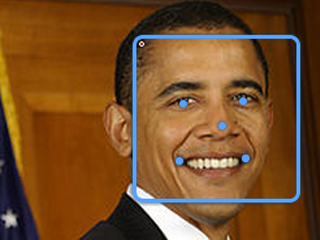

<h2>Take another snapshot to be identified</h2>
<div class="ng-scope">
	<span>Click 'allow' button above to give demo access to your camera.</span>
</div>
<div class="demos ng-scope" ng-show="showWebcam" style="">
	<span>Look straight into the camera like Barak Obama's picture.</span>
	<br>
	
	<br>
	<webcam on-stream="onStream(stream,video)"
	        on-access-denied="onError(err)"
	        on-streaming="onSuccess(video)"
	        placeholder="'../img/ajax-loader.gif'">
		<webcam-canvas />
	</webcam>
	<br>
	
	<button id='snapshot_button' class="btn btn-large btn-primary">Take picture!</button>
</div>